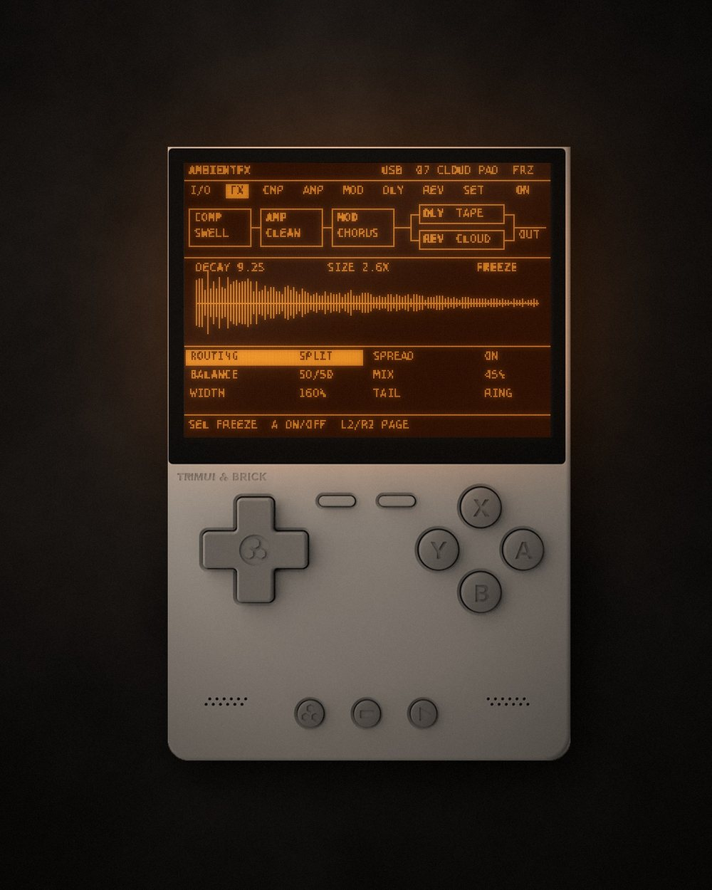

An ambient effects unit for the TrimUI Brick · KNULLI · v1.0 · Sarta Edition
Big rooms.
Long tails.
Slow swells.
BrickAmbientFX is a stereo effects unit made for ambient music. It started from BrickFX, with the reverbs, delays and modulation pushed much further, plus a compressor, an amp with cabinets and a freeze button. Plug a USB synth or a USB audio interface into the Brick and play.
Free and open source (GPL-3.0) · Source code on GitHub

SETUP
The same setup as BrickFX: one cable in, one cable out. It needs a good sound source, so the input is USB only, not the Brick's mic.
- 01Connect a USB synth, like the FM-1, or a USB audio interface to the Brick's USB port. Anything you can plug into the interface can go through it.
- 02Run a cable from the Brick's headphone jack into your audio interface, mixer or amp.
- 03Open BrickAmbientFX. The input shows as USB, whatever device you use. Pick a preset and play.
Pages: I/O · FX · CMP · AMP · MOD · DLY · REV · SET
THE CHAIN
COMP, AMP and cabinet, MOD, DELAY, REVERB. Run them one after the other, or use Split: delay and reverb side by side, with the delay on the left and the reverb on the right if you like. The stereo width goes up to 200%.
COMP
Studio, opto or limiter. Or Swell, for slow volume swells with no attack, like a bow on a string.
AMP + CAB
Clean, crunch, lead, fuzz or lo-fi, with bass, middle and treble, and five cabinets from 1x12 to an old radio.
MOD
Chorus, ensemble, flanger, phaser, tremolo, auto-pan and vibrato. And Glitch: slices that repeat, play backwards, jump an octave or stop like a tape.
DELAY
Up to 4 seconds. Digital, tape, analog, dual, reverse and shimmer, with an octave up in the repeats.
REVERB
Room, plate and hall, plus three for ambient: Cloud (huge), Shimmer (an octave up inside the reverb) and Bloom (it grows slowly).
FREEZE
One tap on SELECT holds the delay and the reverb, so you can play on top of a sound that never ends.
NO CLICKS
Change effect types, switch sections or routing while you play. Turn the delay or reverb off and the tail rings out.
16 PRESETS
Ready-made sounds to start from, also from program change on your MIDI keyboard.
Same C audio engine as BrickFX. With the whole chain on it uses about 10% of the Brick's CPU.
DOWNLOAD AND INSTALL
BrickAmbientFX_v1.0.0.zip · Free, GPL-3.0. The zip has the full source inside. Want to read the code first? See the source on GitHub.
First, your Brick needs KNULLI, a free system you put on the SD card. Get it and its install guide at knulli.org.
- 01Download the zip and unzip it on your computer.
- 02Copy BrickAmbientFX.sh, the .keys files and the brickambientfx folder to roms/ports on the SD card. It sits next to BrickFX and doesn't touch it.
- 03Connect your USB device and the jack, then start BrickAmbientFX from Ports. The first time it unpacks a few files, which takes a few seconds.
Tap SELECT to freeze, hold SELECT for the controls, SELECT + START closes the app. If something goes wrong, brickambientfx/log.txt says why. Tested on KNULLI Scarab.
NEXT UP
- The chain, Split routing, freeze, 16 presets, switching without clicks. Tested on the Brick with a USB synth and an audio interfacev1.0
- EQ and a full-screen oscilloscope, like in BrickFXNext
- Change the order of the sections, and a second Split mode (left input to one path, right input to the other)Later
- A looper to capture what you playIdea
- Choose the shimmer interval: fifth, octave or moreIdea

NO BRICK YET?
BrickAmbientFX runs on the TrimUI Brick, a small handheld console, with KNULLI on its SD card. KNULLI is free: download it and follow the install guide at knulli.org. The app is free: the Brick is the only thing you need to buy.
- 3.2" screen, 1024 × 768
- USB-C for audio interfaces, USB synths and MIDI keyboards
- Headphone jack out
- 3000 mAh battery, 159 g
- White, black, red or purple
Check today's price on AliExpress. This is an affiliate link: if you buy through it, I get a small commission and you pay the same price. It helps me keep the apps free.